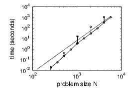

Many computations are limited simply by the sheer number of required additions, multiplications, or function evaluations. If floating-point operations are the dominant cost then the computation time is proportional to the number of mathematical operations. Therefore, we should practice counting. For example, a0 + a1x + a2x2 involves two additions and three multiplications, because the square also requires a multiplication, but the equivalent formula a0 + (a1 + a2x)x involves only two multiplications and two additions.
More generally, aNxN + ... + a 1x + a0 involves N additions and N + (N - 1) + ... + 1 = N(N + 1)∕2 multiplications, but (aNx + ... + a1)x + a0 only N multiplications and N additions. Both require O(N) operations, but the first takes about N2∕2 flops for large N, the latter 2N for large N. (Although the second form of polynomial evaluation is superior to the first in terms of the number of floating-point operations, in terms of roundoff it may be the other way round.)
Multiplying two N × N matrices obviously requires N multiplications and N - 1 additions for each element. Since there are N2 elements in the matrix this yields a total of N2(2N - 1) floating-point operations, or about 2N3 for large N, that is, O(N3).
A precise definition of the “order of” symbol O is in place (Big-O notation). A function is of order xp if there is a constant c such that the absolute value of the function is no larger than cxp for sufficiently large x. For example, 2N2 + 4N + log(N) + 7 - 1∕N is O(N2). With this definition, a function that is O(N6) is also O(N7), but it is usually implied that the power is the lowest possible. The analogous definition is also applicable for small numbers, as in chapter 7. More generally, a function is of order g(x) if |f(x)|≤ c|g(x)| for x > x0.
An actual comparison of the relative speed of floating-point operations is given in table 8.1. According to that table, we do not need to distinguish between addition, subtraction, and multiplication, but divisions take somewhat longer.
It is easy to exceed the computational ability of even the most powerful computer. Hence methods are needed that solve a problem quickly. As a demonstration we calculate the determinant of a matrix. Doing these calculations by hand gives us a feel for the problem. Although we are ultimately interested in the N × N case, the following 3 × 3 matrix serves as an example:
One way to evaluate a determinant is Cramer’s rule, according to which the determinant can be calculated in terms of the determinants of submatrices. Cramer’s rule using the first row yields det(A) = 1×(5+2)-1×(10-1)+0×(4+1) = 7-9 = -2. For a matrix of size N this requires calculating N subdeterminants, each of which in turn requires N - 1 subdeterminants, and so on. Hence the number of necessary operations is O(N!).
A faster way of evaluating the determinant of a large matrix is to bring the matrix to upper triangular or lower triangular form by linear transformations. Appropriate linear transformations preserve the value of the determinant. The determinant is then the product of diagonal elements, as is clear from the previous definition. For our example the transforms (row2-2×row1) → row2 and (row3+row1) → row3 yield zeros in the first column below the first matrix element. Then the transform (row3+3×row2) → row3 yields zeros below the second element on the diagonal:
Now, the matrix is in triangular form and det(A) = 1 × (-1) × 2 = -2. An N ×N matrix requires N such steps; each linear transformation involves adding a multiple of one row to another row, that is, N or fewer additions and N or fewer multiplications. Hence this is an O(N3) procedure. Therefore calculation of the determinant by bringing the matrix to upper triangular form is far more efficient than either of the previous two methods. For say N = 10, the change from N! to N3 means a speedup of very roughly a thousand. This enormous speedup is achieved through a better choice of numerical method.
We all know how to solve a linear system of equations by hand, by extracting one variable at a time and repeatedly substituting it in all remaining equations, a method called Gauss elimination. This is essentially the same as we have done above in eliminating columns. The following symbolizes the procedure again on a 4 × 4 matrix:
Stars indicate nonzero elements and blank elements are zero. Eliminating the first column takes about 2N2 floating-point operations, the second column 2(N - 1)2, the third column 2(N - 2)2, and so on. This yields a total of about 2N3∕3 floating-point operations. (One way to see that is to approximate the sum by an integral, and the integral of N2 is N3∕3.)
Once triangular form is reached, the value of one variable is known and can be substituted in all other equations, and so on. These substitutions require only O(N2) operations. A count of 2N3∕3 is less than the approximately 2N3 operations for matrix multiplication. Solving a linear system is faster than multiplying two matrices!
During Gauss elimination the right-hand side of a system of linear equations is transformed along with the matrix. Many right-hand sides can be transformed simultaneously, but they need to be known in advance.
Inversion of a square matrix can be achieved by solving a system with N different right-hand sides. Since the right-hand side(s) can be carried along in the transformation process, this is still O(N3). Given Ax = b, the solution x = A-1b can be obtained by multiplying the inverse of A with b, but it is not necessary to invert a matrix to solve a linear system. Solving a linear system is faster than inverting and inverting a matrix is faster than multiplying two matrices.
We have only considered efficiency. It is also desirable to avoid dividing by too small a number or to optimize roundoff behavior or to introduce parallel efficiency. Since the solution of linear systems is an important and ubiquitous application, all these issues have received detailed attention and elaborate routines are available.

Figure 10.1 shows the actual time of execution for a program that solves a linear system of N equations in N variables. First of all, note the tremendous computational power of computers: Solving a linear system in 1000 variables, requiring about 600 million floating point operations, takes less than one second. (Using my workstation bought around 2010 and Matlab, I can solve a linear system of about 3500 equations in one second. Matlab automatically took advantage of all 4 CPU cores.) The increase in computation time with the number of variables is not as ideal as expected from the operation count, because time is required not only for arithmetic operations but also for data movement. For this particular implementation the execution time is larger when N is a power of two. Other wiggles in the graph arise because the execution time is not exactly the same every time the program is run.
Table 10.1 shows the operation count for several important problems. Operation count also goes under the name of “computational cost” or “computational complexity” (of an algorithm).
| problem | operation | memory |
| count | count | |
| Solving system of N linear | ||
| equations in N variables | O(N3) | O(N2) |
| Inversion of N × N matrix | O(N3) | O(N2) |
| Inversion of tridiagonal | ||
| N × N matrix | O(N) | O(N) |
| Sorting N real numbers | O(N log N) | O(N) |
| Fourier transform of N | ||
| equidistant points | O(N log N) | O(N) |
A matrix where most elements are zero is called “sparse.” An example is the tridiagonal matrix: A tridiagonal matrix has the following shape:
A sparse matrix, where most elements are zero, can be solved with appropriate algorithms, much faster and with less storage than a full matrix. For example, a tridiagonal system of equations can be solved with O(N) effort, not O(N2) but O(N), as compared to O(N3) for the a matrix.
The ratio of floating-point operations to bytes of main memory accessed is called the “arithmetic intensity.” Large problems with low arithmetic intensity are limited by memory bandwidth, while large problems with high arithmetic intensity are floating point limited. For example, a matrix transpose has an arithmetic intensity of zero, matrix addition of double precision numbers 1∕(3 × 8) (very low), and naive matrix multiplication 2N∕24 (high).
Calculations may not be limited by FLOPs/second but by data movement; hence we may also want to keep track of and minimize access to main memory. For multiplication of two N × N matrices, simple row times column multiplication involves 2N memory pulls for each of the N2 output elements. If the variables are 8-byte double precision numbers, then the arithmetic intensity is (2N - 1)∕(8(2N + 1)) ≈ 1∕8 FLOPs/byte. Hence the bottleneck may be memory bandwidth.
Tiled matrix multiplication: Data traffic from main memory can be reduced by tiling the matrix. The idea is to divide the matrix into m × m tiles small enough that they fit into a fast (usually on-chip) memory. For each pair of input tiles, there are 2m2 movements out of and m2 into the (slow) main memory. In addition, the partial sums, which will have to be stored temporarily in main memory, have to be brought in again for all but the first block; that is about another m2 of traffic per tile. For each output tile, we have to go through N∕m pairs of input tiles. In total, this amounts to (N∕m)34m2 = 4N3∕m memory movements, or 4N∕m for each matrix element, versus 2N for the naive method. This reduces data access to the main memory and turns matrix multiplication into a truly floating point limited operation.
There are enough highly-optimized matrix multiplication routines around that we never have to write one on our own, but the same concept—grouping of data to reduce traffic to main memory—can be applied to various problems with low arithmetic intensity.
Recommended Reading: Golub & Van Loan, Matrix Computations is a standard work on numerical linear algebra.